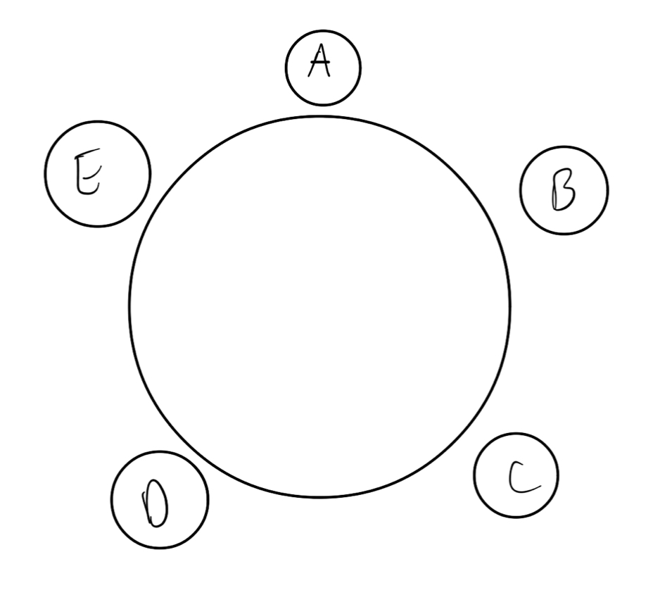

Athar Abdul-Quader
15 October 2020
Let \(A\) and \(B\) be sets and \(R \subseteq A \times B\). If, whenever \(x \in A\), there is exactly one \(y \in B\) such that \((x, y) \in R\), then \(R\) defines the graph of a one to one function. That is, there is \(f : A \to B\) such that \(R = \{ (x, f(x)) : x \in A \}\) and \(f\) is one to one.
Counterexample: \(A = \{ 0, 1 \}\), \(B = \{ a \}\), and \(R = \{ (0, a), (1, a) \}\).
Consider \(A = \{ 0, 1 \}\), \(B = \{ a, b \}\). \(f(0) = a, f(1) = b\).
As before: \(A = \{ 0, 1 \}\), \(B = \{ a, b \}\). \(f(0) = a, f(1) = b\).
A is a knight, B is a knave, C is a knave.
I tell her “Only partly”
I only love my bed and my momma
I’m sorry
(Drake, “God’s Plan”)
“\(x\) loves”\(x\) is the mother of \(y\)""? Not grammatical!
Suppose there are 5 people who want to sit at a round table. In how many ways can we arrange 5 people around the table?
Wait…what is an “arrangement” around a round table?

Other “counting” problems:
(FYI: Wedding planning is hard)
Problem presentation? Final paper / presentation?
Universe: \(\mathbb{N}\). \(P(n)\) any predicate:
\[ [P(0) \wedge \forall n (P(n) \rightarrow P(n+1))] \rightarrow \forall n P(n) \]
Strategy: Break “larger” problem into “smaller” problems for which we know the solution (inductively).
Notice: add next power of 2 to both sides?
Conjecture: The sum of the powers of \(2\) from \(2^0\) to \(2^{n}\) is \(2^{n+1} - 1\).
Can we prove this by induction?
\[P(n): \sum_{i=0}^{n} 2^i = 2^{n+1} - 1\]
Base case: \(P(0): 2^0 = 2^1 - 1\) is true.
Let \(n \in \mathbb{N}\) (arbitrary natural number). Suppose \(P(n)\) is true. This means:
\[\sum_{i = 0}^n 2^i = 2^{n+1} - 1\]
We want to show that \(P(n+1)\) is also true.
How can we use what we know about \(\sum\limits_{i=0}^n 2^i\) to help us figure out \(\sum\limits_{i=0}^{n+1} 2^i\)?
\[\sum_{i=0}^{n+1} 2^i = \sum_{i=0}^n 2^i + 2^{n+1}\]
By assumption, \(\sum\limits_{i=0}^n 2^i = 2^{n+1} - 1\). But \(2 \times 2^{n+1}\) is \(2^{n+2}\). So…
Definition: Let \(n, m \in \mathbb{Z}\). We say \(n\) divides \(m\) if there is \(k \in \mathbb{Z}\) such that \(nk = m\).
Idea: \(m / n\) is an integer.
Definition: Let \(n \in \mathbb{N}\), \(n > 1\). For \(x, y \in \mathbb{Z}\), we say \(x \equiv y\) (mod \(n\)) if \(n\) divides \(x - y\).
Theorem: Let \(n \in \mathbb{Z}\) and \(k > 0\). There are unique \(q, r \in \mathbb{Z}\) such that \(n = qk + r\) and \(0 \leq r < k\).
Proof? (Actually non-trivial, but we will omit it.)
Maybe a problem presentation?
Theorem: Let \(n \in \mathbb{N}\), \(n > 0\), and \(x, y \in \mathbb{Z}\). If \(x \equiv y\) (mod \(n\)), then \(y \equiv x\) (mod \(n\)).
What needs to be proved here? What do we assume?
Theorem: Let \(n \in \mathbb{N}\), \(n > 0\), and \(x \in \mathbb{Z}\). Then \(x \equiv x\) (mod \(n\)).
Again: what needs to be proved here? What do we assume?
Theorem: Let \(n \in \mathbb{N}\), \(n > 0\), and \(x, y, z \in \mathbb{Z}\). If \(x \equiv y\) (mod \(n\)) and \(y \equiv z\) (mod \(n\)), then \(x \equiv z\) (mod \(n\)).
Proof (idea): Let \(n \in \mathbb{N}\), \(n > 0\), and \(x, y, z \in \mathbb{Z}\). Suppose \(n\) divides \(x - y\) and \(n\) divides \(y - z\). Then…?
(Show \(n\) divides \(x - z\). How? Write down, explicitly, the definitions of “\(n\) divides \(x - y\)” and “\(n\) divides \(y - z\)”. Then manipulate things to show that the definition of \(n\) divides \(x - z\) is also satisfied.)
Due Friday, October 23.